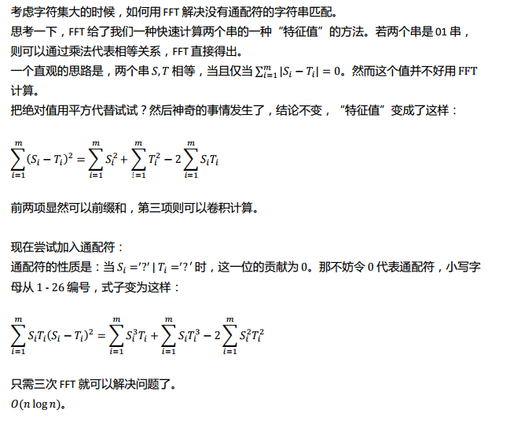

6-18考试总结
T1 mathing
题目描述
给定两个含小写字母、通配符的字符串 S, T。
出于简化问题的考虑，这里的通配符只有“? ”一种。它可以匹配任意一个字符。
你的任务是：求 T 在 S 中的出现次数。
输入格式
两行各一个字符串，各代表 S 和 T。
输出描述
一行一个整数，表示 T 在 S 中的出现次数。
数据范围
Time Limit : 3s
Memory Limit : 128 M
|T| ≤ |S| ≤200000
题解

1 |
|
T2 divisor
题目描述
给定整数 n，求：
$$\sum_i^n\sum_{d|i}gcd(d,\frac id)$$
保证答案在 long long 范围内。
输入描述
一行一个整数 n。
输出描述
一行一个整数，表示答案。
数据范围
Time Limit : 2s
Memory Limit : 128 M
n<=10^13
题解
推公式。
$$\sum_i^n\sum_{d|i}gcd(d,\frac id)=\sum_{i=1}^n\sum_{j=1}^{[\frac ni]}gcd(i,j)$$
$$=\sum_{d=1}^nd\sum_{i=1}^n\sum_{j=1}^{[\frac ni]}[gcd(i,j)=d]$$
$$=\sum_{d=1}^nd\sum_{i=1}^{[\frac nd]}\sum_{j=1}^{[\frac n{id^2}]}\sum_{p|gcd(i,j)}\mu(p)$$
$$=\sum_{d=1}^nd\sum_{p=1}^n\mu(p)\sum_{i=1}^{\frac n{dp}}[\frac n{id^2p^2}]$$
$$=\sum_{d=1}^nd\sum_{p=1}^n\mu(p)\sum_{i=1}^{\frac n{d^2p^2}}[\frac n{id^2p^2}]$$
计$S_n=\sum_{i=1}^n[\frac ni]$ ,枚举$pd$则上式
$$=\sum_{p=1}^{\sqrt n}S_{[\frac n{p^2}]}\sum_{d|p}d\mu(\frac pd)$$
$$=\sum_{p=1}^{\sqrt n}S_{[\frac n{p^2}]}\phi(p)$$
$\phi$只需前$\sqrt n$ 项，可预处理。$S$可$O(\sqrt n)$ 暴力计算。
复杂度：$\sqrt{[\frac n{1^2}]}+\sqrt{[\frac n{2^2}]}+\dots+\sqrt{[\frac n{\sqrt n^2}]}=\sqrt nlogn$.
1 |
|
T3 permu
题目描述
一个排列 An 被称为是对合的，当且仅当：$∀1 ≤ i ≤ n, A_{A_i} = i$。
Cob 想知道长度为 n 的排列中，有多少个具有对合的性质。但他不幸
发现，这是个水题。因此，他把问题加强了一下，抛给了你：
给定一个 1 − k 的排列 Bk (k ≤ n)，试求出：有多少个长度为 n 的对合
排列，满足 Bk 是其子序列。
由于答案可能很大，请对 1004535809 (479 × 221 + 1) 取模后输出。
输入格式
第一行两个整数 n, k。
第二行 k 个整数，表示 Bk。
输出格式
一行一个整数，表示答案
数据范围
Time Limit : 1s
Memory Limit : 128 M
k<=n<=10000
题解
我们可以将约束条件看做两个位置上的匹配，即对于$i,j$ 有$A_i=j,A_j=i$。
对于B，若它的某个前缀与1-k中的位置匹配则方案一定是唯一的。与k之后的位置匹配就没有什么限制了。
考场上想到这里，写了一个dp。计f[i][j][l]表示前i位，1~k中有j个数已匹配，k+1~i中有l个数已匹配的方案数。对于第i个数，它能和B1~k中第一个未匹配的数匹配，或与k+1~i的l个数中的任意一个匹配，或自己与自己匹配，或留着给后面的匹配。直接转移即可。复杂度$O(n^3)$
然而我们发现如果枚举B中前m位与1~k中的匹配，那么对于i>m的Bi,它们的方案数为$C_{n-k}^{k-m}$。考虑剩下的n-2k+m个空格子。把这些空格子单独抽出来单独考虑显然是可行的，问题相当于求长度n-2k+m为 的对合排列有多少个。这个设计一个简单的递推式即可解决：$f_n=f_{n-1}+(n-1)f_{n-2}$。
70分代码：1
2
3
4
5
6
7
8
9
10
11
12
13
14
15
16
17
18
19
20
21
22
23
24
25
26
27
28
29
30
31
32
33
34
35
36
37
38
39
40
41
42
using namespace std;
const int N=505,mo=1004535809;
int f[N][N],g[N][N],a[N],b[N],c[N],n,k;
void add(int &x,int y){
x+=y;
if(x>=mo) x-=mo;
}
bool check(int n){
for(int i=1;i<=n;i++) b[i]=a[i];
sort(b+1,b+1+n);
memset(c,0,sizeof(c));
for(int i=1;i<=n;i++) c[b[i]]=a[i];
for(int i=1;i<=k;i++)
if(c[i]&&c[c[i]]!=i) return false;
return true;
}
int main(){
freopen("permu.in","r",stdin);
freopen("permu.out","w",stdout);
scanf("%d%d",&n,&k);
for(int i=1;i<=k;i++) scanf("%d",a+i);
for(int i=0;i<=k;i++)
if(check(i)) f[k-i][0]=1;
for(int i=k;i<n;i++){
memset(g,0,sizeof(g));
for(int j=0;j<=k;j++)
for(int l=0;l<=i-k;l++){
if(j) add(g[j-1][l],f[j][l]);
if(l) add(g[j][l-1],1ll*f[j][l]*l%mo);
add(g[j][l],f[j][l]);
add(g[j][l+1],f[j][l]);
}
memcpy(f,g,sizeof(g));
}
printf("%d\n",f[0][0]);
return 0;
}
满分代码：1
2
3
4
5
6
7
8
9
10
11
12
13
14
15
16
17
18
19
20
21
22
23
24
25
26
27
28
29
30
31
32
33
34
35
36
37
38
39
40
41
42
using namespace std;
const int N=10010,mo=1004535809;
int f[N],a[N],b[N],c[N],inv[N],n,k,ans;
long long ksm(long long x,int y){
int tmp=1;
for(;y;y>>=1,x=x*x%mo)
if(y&1) tmp=tmp*x%mo;
return tmp;
}
long long C(int n,int m){
if(m>n) return 0;
return inv[n]*ksm(inv[n-m],mo-2)%mo*ksm(inv[m],mo-2)%mo;
}
bool check(int n){
memset(b,0,sizeof(b));
for(int i=1;i<=n;i++) b[a[i]]=1;
memset(c,0,sizeof(c));
int cnt=0;
for(int i=1;i<=k;i++)
if(b[i]) c[i]=a[++cnt];
for(int i=1;i<=k;i++)
if(c[i]&&c[c[i]]!=i) return false;
return true;
}
int main(){
freopen("permu.in","r",stdin);
freopen("permu.out","w",stdout);
scanf("%d%d",&n,&k);
for(int i=1;i<=k;i++) scanf("%d",a+i);
f[0]=1; f[1]=1; inv[0]=1;
for(int i=1;i<=n;i++) inv[i]=1ll*inv[i-1]*i%mo;
for(int i=2;i<=n;i++) f[i]=(f[i-1]+1ll*(i-1)*f[i-2])%mo;
for(int i=0;i<=k;i++)
if(check(i)) ans=(ans+C(n-k,k-i)*f[n-2*k+i])%mo;
printf("%d\n",ans);
return 0;
}